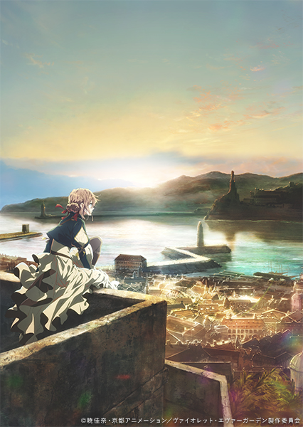
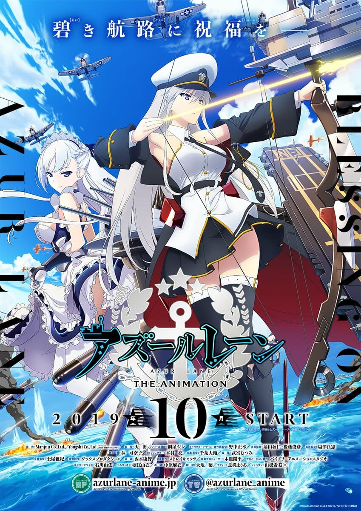
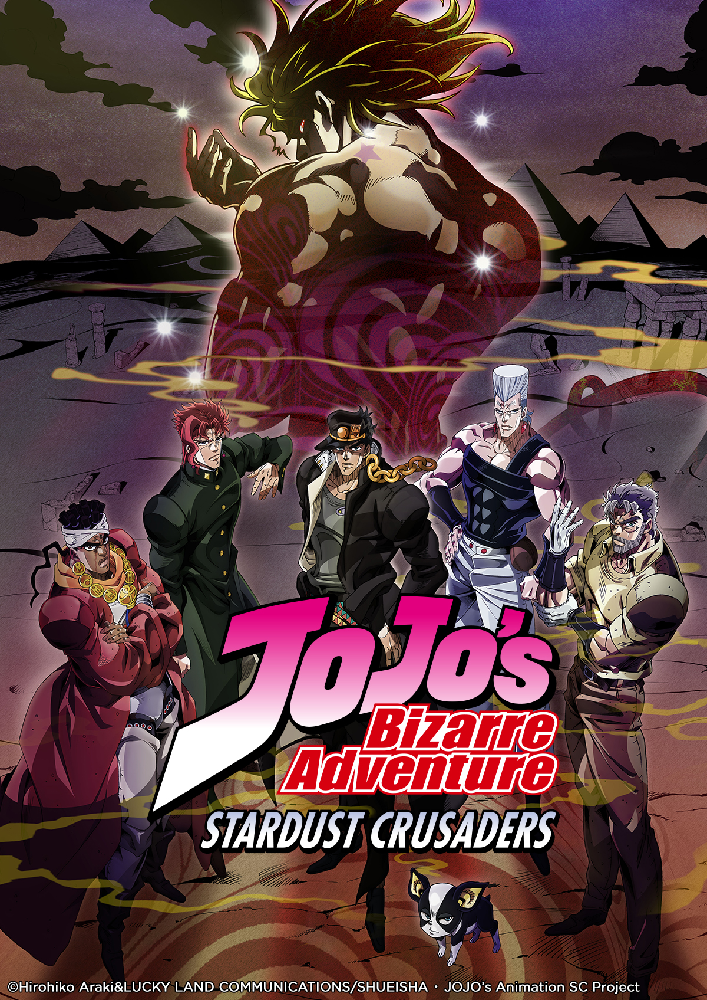
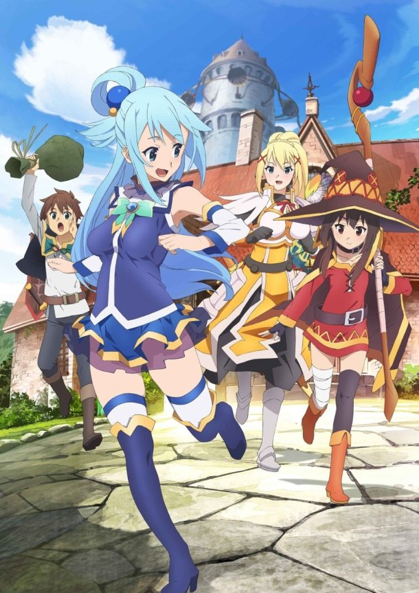
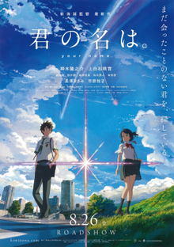

What is anime?Anime is a genre of animation whether that be drawn or computer generated that comes out of Japan.
Unlike the Japanese Army, anime has successfully "invaded" other countries. This makes anime fimiliar to many in terms of popular culture.
Why am I obsessed with anime?When I was young living in China, Pokémon, Doreamon, Digimon and Bakugan were all the craze.
Then when I moved to Canada I don’t know what happened, but I started to grow out of anime. It was not until recently that I got back into anime.
This was thanks to my friend John who told me to give anime a chance. I listened to him and I regret nothing. My love for anime came back and multiplied ten times!
Watching anime in the internet age is so convenient and it is also easy to connect with other fans as well over the internet.
Top Five Favourite Anime
1.Violet Evergarden

This series from episode one to fourteen was just an emotional
joy ride. The visuals and sound design were stunning and beautiful.
This series captured what happens to veterans when they integrate
back to society very well. The character development for Violet Evergarden
was really well paced. One hundred percent would recommend. – William
2.Azur Lane
3.Jojo's Bizarre Adventure
4.Konosuba
5.Your Name

The Azur Lane anime was the first anime I watched after getting back into anime.
This was because it was an adaptation of a very popular mobile game called Azur Lane.
It would be no surprise if I told you that I am very addicted to that game.
Even if many think that the anime adaptation was garbage I enjoyed it and
thus it will always have a place in my heart. – William
Jojo’s Bizarre Adventure is probably one of the most well known Shounen Jump
anime to be adapted. The story follows the Joestar family lineage in eight
different bizarre adventures, each of them bizarre and wacky. This franchise has
amazing story, music and visuals. There is no other Shounen Jump anime that has
been able to top Jojo’s Bizarre Adventure. – William
Konosuba is the anime that made me laugh so hard, I honestly thought I was going to faint.
The jokes paired with the beautifully charming art style and voice acting is what sold
me this series. The story follows a shut in named Kazuma who dies and gets transported to a
fantasy world of a game that he wanted to buy.Kazuma then goes on adventures with Darkness,
Aqua and Megumin. The rest is history. – William
Your Name or Kimi No Nawa is the highest grossing movie in all of anime hsitory and for good
reason. The music is paired with the amazing visuals is simply stunning. Makoto Shinkai is
the one movie director that makes everything look good. Makoto Shinkai and the music producer
Rad Wimps is the Japanese equivalent of George Lucas and John Williams. The plot is a romance
that happens when two teenagers switch bodies. –William